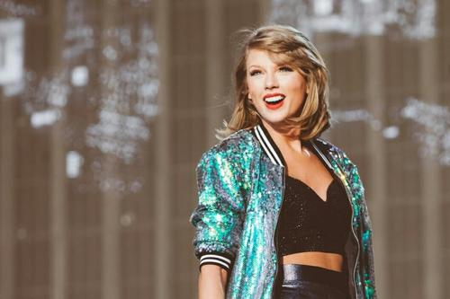

Performing experience

In June 2006, Taylor Swift released his first music single "Tim McGraw", which was promoted by Taylor swift and his mother on the radio; with the music MV, Taylor Swift nominated the CMT "female singer video of the year" and "the most breakthrough video of the year" And finally won the "most breakthrough video of the year award" .
In May 2007, he performed the song "Tim McGraw" at the country music association awards. In the
same year, he was the opening guest of Tim McGraw and Faith Hill's soul2soul tour. On August 21, he
was the guest of the finals of "America's got talent". On the second week of the list, the album
"My Guardian" rose to No. 37. On November 7, he won the best newcomer award of the country music association and performed the song "our song". On October 16, he released his holiday album sounds of the season: the Taylor Swift holiday collection. In December, he nominated the "Best Newcomer Award" of the 50th Grammy Awards .
On January 29, 2008, the fourth single of the album of the same name, picture to burn, was released. On February 9, 2009, he acted as a guest in the 51st Grammy Awards and performed "fifth een" with Miley Cyrus. In 2010, he won eight nominations for the 52nd Grammy Awards, and finally won four awards for best album , best country female singer, best country song and best country album. In February 2011, the world tour of love's advertisement was launched. On November 21, he won three awards including the artist of the year award of the National Music Awards. On February 13, 2012, he was the guest of the 54th Grammy Awards, and won the "best country singer award" and "best country song award" for his song "mean". On February 24, he attended the British Fashion Awards held by Elle .
On February 16, 2016, he won the "album of the year award", "best pop album Award" and "Best Music Video Award" of the 58th Grammy Awards, and served as the opening guest to sing the song "out of the woods". In March 2018, she won the "female artist of the year" award of iHeartRadio Music Award, the single "look what you make me do" was nominated for "best lyrics" and "best MV", Taylor Swift fans won "best fans" award, and pet Olivia Benson won "best pets" Award; on April 20, Sugar Land's single "babe" was released 。 In March 2019, he attended the iHeartRadio Music Award, the single "delay" won the "best MV" award, and the "world famous world tour" won the "annual tour" Award.In February 2020, Taylor Swift reached a cooperation with Global Music Publishing Group on the global publishing of his music works . In April, novel coronavirus pneumonia was announced to cancel all concert and performance in 2020. On April 24, her former record company, big machine records, launched live from clear channel striped 2008 without the consent of herself and her universal record team. On November 25, he nominated the 63rd Grammy Awards for six major awards, including album of the year, song of the year and best pop singer. On December 11, he released his ninth music album evermore. The paid digital version of the album sold more than 180000 copies in one minute when it was put on the shelves of QQ music
Look at next page